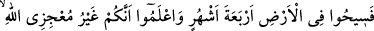
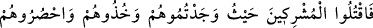

MÜŞRİKLERE İHTAR
1. Allah ve Rasûlü’nden kendileriyle andlaşma yapmış olduğunuz müşriklere bir
ihtardır!
2. (Ey müşrikler) Yeryüzünde dört ay daha dolaşın, iyi bilin ki siz Allah’ı âciz
bırakacak değilsiniz. Allah kâfirleri rezil rüsvây edecektir.
3. Hacc-ı ekber (en büyük hac) gününde Allah ve Rasûlü’nden insanlara bir
bildiridir: Allah ve Rasûlü müşriklerden uzaktır. Eğer tevbe ederseniz, bu sizin için
daha hayırlıdır. Ve eğer yüz çevirirseniz bilin ki siz Allah’ı âciz bırakacak
değilsiniz. O kâfirlere elem verici bir azâbı müjdele.
4. Ancak andlaşma yaptığınız müşriklerden (andlaşma şartlarından) hiçbir şeyi
eksik bırakmayan ve size karşı hiç kimseye arka çıkmayanların andlaşmalarını,
kendilerine tanıdığınız süreye kadar tamamlayın. Şüphesiz Allah müttakîleri sever.
5. Haram aylar çıkınca müşrikleri bulduğunuz yerde öldürün, onları yakalayın,
hapsedin ve her gözetleme yerinde oturup bekleyin. Eğer tevbe eder, namazı
dosdoğru kılar, zekatı da verirlerse artık yollarını serbest bırakın. Allah bağışlayan,
esirgeyendir.
6. Eğer müşriklerden biri senden eman dilerse, Allah’ın kelâmını işitip